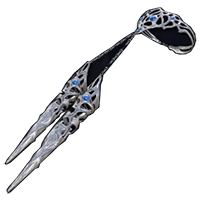

Přehled
Revenant je Nightfarer z Elden Ring Nightreign. Je balanced a musíš ji prostě umět.
Schopnosti
-
 Passive – Necromancy: Po zabití nepřítele jej vzkřísí, aby bojoval jako spojenec.
Passive – Necromancy: Po zabití nepřítele jej vzkřísí, aby bojoval jako spojenec. -
 Skill – Summon Spirit: Přivolá pomocí Lyry vzkříšenou rodinu.
Skill – Summon Spirit: Přivolá pomocí Lyry vzkříšenou rodinu. -
 Ultimate – Immortal March: Poskytne sobě a spojencům dočasnou nesmrtelnost.
Ultimate – Immortal March: Poskytne sobě a spojencům dočasnou nesmrtelnost.
Zbraně
-

REVENANT'S CURSED CLAWS – Drápy (základní výbava), skalují s Faith (S).
Původ a Lore
Revenant pochází z prokletého klanu, který je odsouzen bloudit mezi životem a smrtí. Její síla je odvozena od nekromancie a vazby na duše padlých. V příběhu představuje symbol věčného návratu – i když padne, znovu povstane.
Statistiky
Level 1
- HP: 200
- Stamina: 54
- FP: 80
- Faith: 5
- Strength: 2
- Dexterity: 2
- Intelligence: 4
Level 15
- HP: 780
- Stamina: 90
- FP: 200
- Faith: 51
- Strength: 21
- Dexterity: 21
- Intelligence: 30
Styl hraní
Revenant je určen pro hráče, kteří chtějí ovládnout delší souboje a držet tým při životě. Vyžaduje dobré načasování a strategické využívání ultimátky Immortal March.
- Silný v dlouhých soubojích díky nekromancii.
- Ultimátka poskytuje týmovou nesmrtelnost – klíčové pro clutch momenty.
- Není vhodný pro hráče zaměřené na čistý burst damage.
- Nejlépe funguje v kombinaci s AoE postavami.
Zajímavosti
- Jediná postava, která dokáže vzkřísit padlé nepřátele jako spojence.
- Design je inspirován legendami o nemrtvých rytířích.
- Ultimátka byla původně zamýšlena jako heal, ale změnila se na nesmrtelnost.
- Při použití Revenant's Cursed Claws se objevují fialové jiskry jako vizuální efekt.